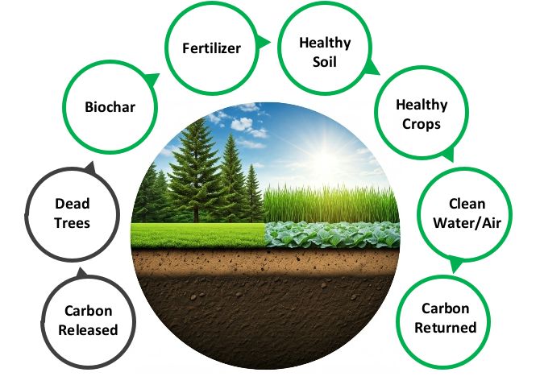
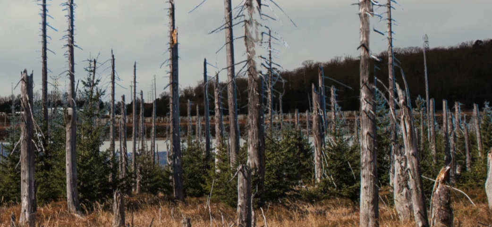
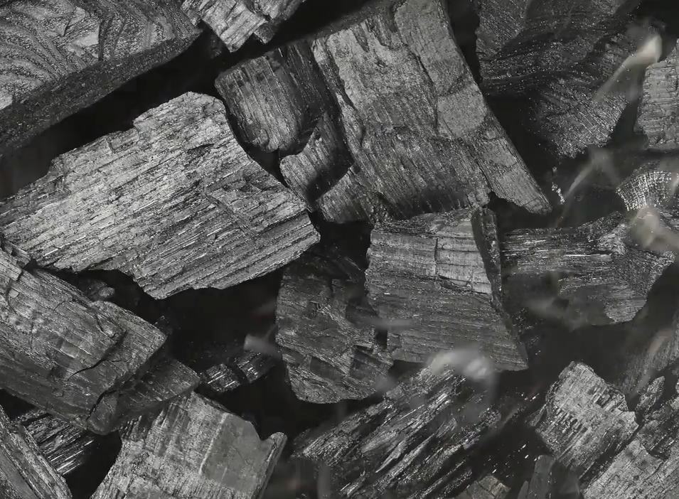
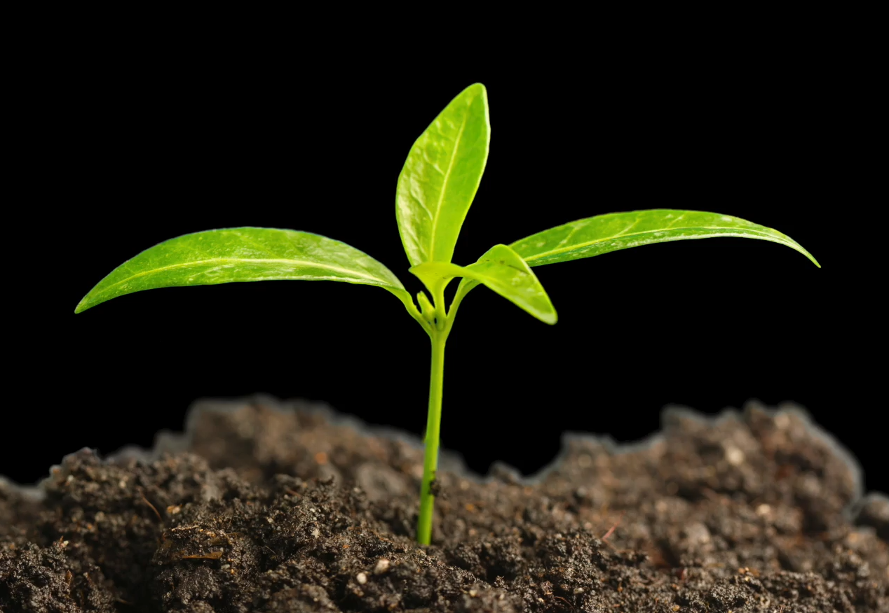
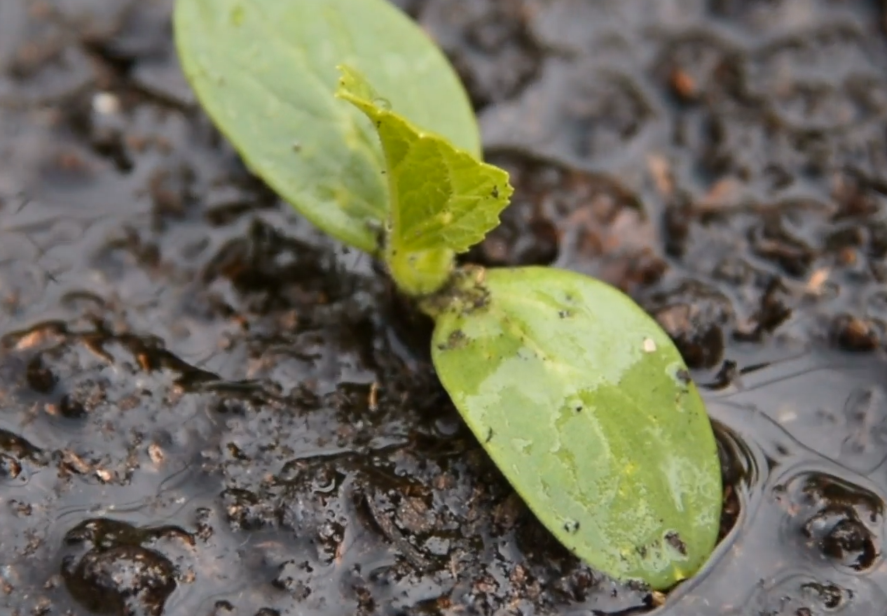
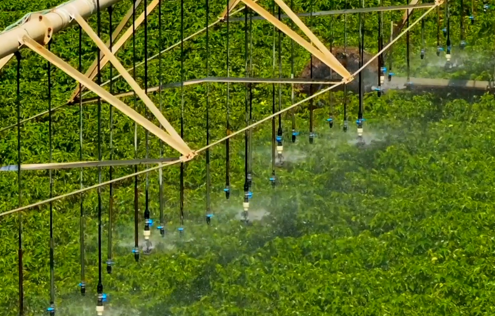
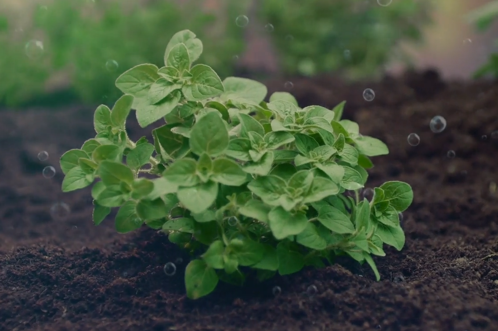
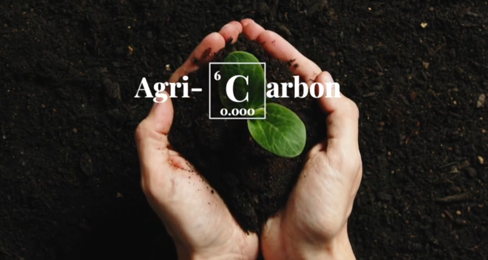

Our Mission at AgriCARBON
Together we can position the United States as a global leader in sustainable agriculture, carbon sequestration, and environmental stewardship. The time to act is now! Let’s turn our challenges into opportunities. Join us in this movement to restore our soils, empower our farmers and secure a sustainable future for generations to come. Let’s make a difference - one acre at a time.
How We Do It
Dead Trees
Every year, beetle-killed trees leave behind more than 100 acres of deadfall in the U.S. alone. This debris fuels catastrophic wildfires and releases massive amounts of carbon into the atmosphere. What if this problem could become part of the solutions? Our process begins by taking forest debris and heating it in an oxygen-depleted kiln at a temperature up to one thousand degrees Fahrenheit.
Boichar
The result? A carbon-rich material called biochar, with an immense surface area and remarkable properties. At AgriCRBN, biochar is a cornerstone of our fertilizer and soil amendment products. Biochar enhances soil structure, increases nutrient retention, and improves water-holding capacity. Most importantly, it acts as a long-term carbon sink, helping to draw down atmospheric carbon and complete the natural carbon cycle.
Fertilizer
Our approach to soil health doesn’t just address climate and environmental concerns. It also supports agricultural resilience, food security, and public health. By integrating practices like regenerative agriculture, biochar production, and holistic forest management, we can chart a path toward a more sustainable and prosperous future.
Healthy Soil
Biochar enhances soil porosity, boosts water retention, and increases nutrient availability. When combined with organic liquid fertilizers, it accelerates soil regeneration, achieving in just a few years what would naturally take centuries. Biochar doesn’t just lock carbon into the soil for centuries - it also prevents carbon dioxide off-gassing from deadfall and improves soil health.
Healthy Crops
By sequestering carbon in the soil, biochar addresses legacy carbon emissions while reducing the dependency on synthetic fertilizers. Cover crops and regenerative practices further increase yields, capturing even more carbon in the process.
Clean Water/Air
Previous initiatives to reduce fuel loads in our forests to prevent wildfires was an important step toward better land management. Moving forward, this initiative can play a key role in advancing another critical goal: the production of biochar. By converting forest residues into biochar, we not only reduce the risk of devastating wildfires but also create a powerful tool for rebuilding soil health and sequestering carbon.
Carbon Returned
This isn’t just about soil - it’s about empowering our stewards of the land: America’s farmers. By adopting regenerative agriculture practices powered by biochar, they’re improving yields, reducing costs,and creating new revenue streams through soil carbon credits. At AgriCARBON, we’re helping farmers weaponize their fields against climate change and turn challenges into fiscally responsible solutions.

Our Farmers and Communities
This isn’t just about soil - it’s about empowering our stewards of the land: America’s farmers. By adopting regenerative agriculture practices powered by biochar, they’re improving yields, reducing costs,and creating new revenue streams through soil carbon credits. At AgriCARBON, we’re helping farmers weaponize their fields against climate change and turn challenges into fiscally responsible solutions. The benefits extend far beyond the farm. Rural economies thrive as biochar production and regenerative farming create new jobs. Communities become more resilient, mitigating the risks of wildfires and droughts while sequestering carbon and reducing greenhouse gas emissions. Let’s help our farmers and growers transition to practices that restore soil, improve food security, and mitigate climate change - all while ensuring economic growth. At AgriCARBON, we’re transforming these environmental challenges into sustainable opportunities.